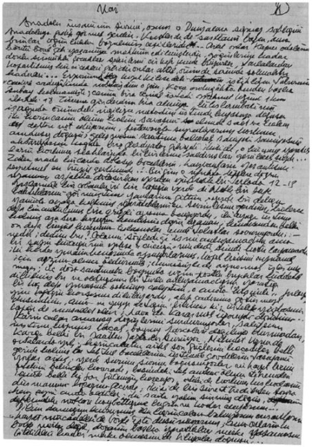

Anadolu insanının şiirini, onun o dünyalara sığmaz saflığını, şirinliğini Anadolu’ya gidip görmek gerekir; çünkü nasıl aslanı hayvanat bahçesinde görmek aslanı anlatamazsa Anadolu insanını da kentlerde görmek onu anlatmıya yetmez, şehirlerde rastlanılanları bozulmuş çeşitleridir, artık onlar kapıcı odalarında, han odalarında üst üste börtü böcek gibi yaşamaya mahkûm edilmişlerdir; göğüslerine kadar donlu sümüklü çocuklar şehirlerin çirkefi içinde büyürler, tarlalardan koparılmış kır çiçekleri gibidirler, önünde sonunda solmaktır kaderleri...
Erzurum’un Kızıl Kilise’sindeki istihkâm taburunun “Çadırlı ordugâhında” nöbetçiydim o gün, koca ordugâhta benden başka subay kalmamıştı; canım bira istedi, emir eri Mehmet Uzun’u 1 km. ilerdeki 18. tümene gönderdim bira almak için; lüks lambasının ışığında önümdeki İngilizce metodun üstünde dövüşen iki karıncanın kıyasıya savaşını elimde saat, metodun kapağına not ediyorum; pertavsızla izliyorum korkunç, amansız döğüşü, bir gladyatör gibiydi ikisi de; o küçücük yaratıkların korkunç silahlarıyla birbirlerine saldırışları görülecek şeydi... Zaten orda kırlarda dolaşıp böceklerin, hayvanların yaşantısını seyretmek en büyük zevkimdi, bir gün koskocaman karnı inanılmayacak kadar güzel renklerle yanıp sönen bir böcek bulmuştum; bir gün de dağda dolaşırken bir taşı kaldırdım, altından akrepler, çıyanlar, tesbih böcekleriyle yaşıyan bir karınca yuvası çıkmıştı, kat kat yuvada taneler sinek kanatları gibi zahire ayrı ayrı depolara istif edilmişlerdi; karıncaların ilk işi pirinç tanesi büyüklüğündeki beyaz yumurtaları telaşla daha aşağı katlara taşımak olmuştu... Başka bir gün ufukta tepelerin arkasında kaybolan asfaltta dolaşırken yerden yüksekçe bir tarlada 12-13 yaşlarında bir çobanla iri bir köpeğin yerde dikkatle bir şeye baktıklarını görmüştüm; yanlarına gittim, yerde bir deliğin yanında iki ayağı üstüne kalkmış bir küçük hayvan gördüm, yaratıkların en sevimlisiydi, upuzun tüyleri vardı, küçücük pençelerinden minik tırnaklarını çıkarmış dövüşe hazırdı, küçücük burnu havada tıslamalar çıkarıyordu, köstebek yavrusu muydu neydi bir türlü anlıyamadım, binlerce defa küçültülmüş bir Grizzli ayısını andırıyordu; köpeğin kendisine doğru uzanan, kendisinden belki on defa büyük burnuna doğru tokatlar savuruyordu; Nedir, dedim bu? Çobanın söylediği ismi anlıyamadım ama bir şeyin küçüğü mü cücüğü mü dedi şimdi hatırlıyamıyorum.. İki kardeş yuvanın kenarında oynuyorlarmış, köpek birisini oynamak için ağzına almış öldürmüş, ikincisiyle de oynamak istermiş meğer; üç dört santimetre boyunda simsiyah gözleri hiddetten ateş saçan; bıyıkları hırstan titreyen bu küçücük yaratığı birkaç defa yuvasına sokmıya çalıştım, o anda hışımla fırlayıp yine köpeğin karşısına dikiliyordu; alıp çadırıma götürmeyi düşündüm, ama ne yer ne içer bilmem ki! üstelik yüzbaşının finosu da musallat olur, hava da kararmak üzereydi, döndüm...
Karıncalar amansız döğüşlerini sürdürüyorlar, sahifenin üstüne kopmuş bacak, boynuz parçaları dağılıyor durmadan, kavga belki bir saatten fazladır sürüyor, Mehmet Uzun da ortalarda yok; karıncaların artık son güçlerini harcadıkları belli, geride kalmış tek tük bacaklarının üstünde gövdelerini taşıyamıyorlar artık, yerde sürüne sürüne boğuşuyorlar; nihayet biri can havliyle ötekinin belini kavradı, başındaki tek anten ölüm titremeleri içinde, belli ki son gücünü harcıyor, öteki de korkunç kıskaçlarını düşmanın boğazına geçirdi, ikisi de bir süre titredikten sonra aynı anda öldüler... İki saate yakın sürmüş döğüş, aldığım notları kaybettiğime bugün ne kadar hayıflanıyorum... Ölü karıncalara bakıyorum, insanların “Hayat mücadelesi” de böyle işte diye düşünüyorum; ama onlarınki böyle mertçe değil, doğanın başka yaratıkları mertçe yaşamasını bildikleri kadar mertçe ölmesini de biliyorlar doğrusu...
Nihayet Mehmet Uzun geldi, Taşeli’nden kendisi, boyu ortadan kısaca, sağlam yapılı bir Anadolu çocuğu; pırıl pırıl yüzünde simsiyah gözleri hüzün dolu, sanki ağlıyacak nerdeyse: Bulamadım komutanım, dedi; çok “teeddüp” ettim, bulamadım... Eh, dedim; bulamadınsa bulamadın, ama bunda teeddüp edecek ne var? Teeddüp ettim asteğmenim, dedi yeniden; çok teeddüp ettim! Oğlum, dedim; teeddüp edecek bir şey yok ki bunda, bira nihayet; rakı alaydın bari.. Onu da teeddüp ettim dedi, tümende bulamayınca kanbur hancıya gittim onda da teeddüp ettim yoktu! Mehmet Uzun’un teeddüp ettim lafını daha kibarca olsun diye aradım yerine kullandığını neden sonra anladım...
Kastamonu’ya gitmiştim görevle 1943 ya da 44 yılında, Hükümet Meydanında bir Tekel Müdürlüğü binası yapılacak, proje işini bana verdiler; hem yerini görüp hem de “mahallinde” gerekli incelemeleri yapacağım, otelde oturuyorum, gündüzleri lokanta, akşamları meyhane olan bir yerde yiyorum yemeğimi; bir akşam yine boş bir masaya oturmuş, önümde peynir, pilaki, köfte, rakımı içiyorum, iki kişi geldi, ellerini göğüslerine koyup merhabalarını yapıp karşıma oturdular, ikisi de zil zurna sarhoş, hele benim karşımdaki sarhoştan da öte; gözleri çakmak çakmak, bir şeye çok üzülmüş olacak, hıçkıra hıçkıra ağlamıya başladı, öteki de onu yayık sarhoş ağzıyla “teselli” etmiye çalışıyor; anlaşılan bir kadın meselesi. Ben, diyor, bırakır mıyım onun yanına bunu; görsün, bakalım nasıl olurmuş... Ben sanki orada değilim, birden benim farkıma vardılar, bir tanesi: Rahatsız etmiyoruz ya bayım, dedi; rahatsız etmesine ediyorlar ya, ama söylenir mi?
– Estağfurullah, niçin rahatsız edeceksiniz!
– Allah aşkına rahatsız oldunsa söyle!
– Yok kardeşim, etmiyorsunuz.
Bu kere ağlıyanı sallana sallana kalkmış, masanın üstünden uzanmış elimi yakalayıp öpmiye çalışıyor, masa alabora olacak nerdeyse, bir su şişesi devrildi bile, garson gelip masayı siliyor.. Yine konuşmaya başladılar bu sefer ötekinin aklına bana yediklerinden ikram etmek geldi, aynı şeyleri yiyoruz oysa ki; peynir, plaki filan, zaten başka şey yok ki meze olarak... Çatalına plaki koymuş bana uzatıyor, var diyorum can havliyle, sağ olsun, ben de ondan yiyorum zaten, ama laf anlatmak mümkün mü “Ölümü gör, abi diyor, almazsan darılırım”, çarnaçar alıyorum tiksinerek, bu sefer öteki peynir uzatıyor; şu işkenceden nasıl kurtulayım acaba? Ondan da aldık, ben de sigara paketini uzatıyorum, zar zor birer sigara çıkarabildiler, birisi kulağının arkasına sıkıştırdı, öteki titreyen kibritin alevinde epice uğraştıktan sonra yakabildi... Tekrar daldılar konuşmıya, ben kitabımı okuyorum, birden karşımdaki cebinden koca bir toplu tabanca çıkarıvermez mi! Onunki, diyor, kurşun atar da, benimki pamuk mu atar! Tüylerim ürperdi; tabancanın simsiyah ağzı bir ölüm çukuru gibi bana bakıyor, topundaki mermiler pırıl pırıl gözüküyor... Ne yapsam acaba, helaya gidiyorum diye kalkıp şuradan çıksam gitsem; ama sarhoş bu, ne yapacağı belli olmaz ki, ya kendisine hakaret sayıp tetiğe basıverirse! Gözlerimi kitaba indiriyorum görmemiş gibi; yanımdan geçen garsona göz ucuyla tabancayı işaret ediyorum, oralı bile olmadı herif; başını belaya sokmak istemiyor, belli... Tabanca tekrar sarhoşun cebine ininceye kadar yüz yıl mı, iki yüz yıl mı geçti bilmiyorum; nihayet “kat’î” surette o herifi vurmıya karar verip hesabı ödediler, yıkıla devrile gittiler, veda edip masadan ayrılıncaya kadar döktükleri diller de ayrıca vaz geçip tekrar otururlar diye bana epice ter döktürmüştü!
Geleli bir hafta kadar oluyor, o sıra Roosewelt’in ölümü haberi bomba gibi patlamıştı... İşim bitmiş, İstanbul’a dönmek için “maaşımın” gelmesini bekliyorum, bir türlü gelmiyor, param da bitti nerdeyse üstelik, artık lokantaya filan gidemiyorum, birkaç yumurta alıp otelin kâtibine haşlattım, bir de ekmek aldım onları yiyorum; nihayet tepem attı, bir gün “İnhisarlar” müdürüne çıktım, durumu anlattım, avans istiyorum; oralı bile olmadı, “mevzuat” maniymiş, Genel Müdürlük’ten sormak lazımmış, telgraf çekilmesini istiyorum, o da yapılamazmış, nihayet güç bela razı oldu telgrafa, öfkeyle çıktım adamın yanından... Sigarayı bile sayarak içiyorum artık, tam iflas halindeyim; yumurtaları, ekmeği gece dolabının çekmecesine saklıyorum görmesinler diye...Ama kâtip anladı vaziyeti galiba; otelin terasında oturmuş konuşuyoruz bir akşamüstü, karşıda hemen yakında kartal yuvası gibi kaleyi gösteriyor, hikâyesini anlatıyor; bir tekfurun kızı bir Türk’e âşık olmuş, kızın adı “Moni” imiş, bir gün aşkına dayanamayıp kendini kaleden atmış ölmüş, sevgilisi de “Kastin neydi Moni” diye sarılıp ağlamış ondan sonra buranın adı Kastamoni kalmış... Kâtip anlatıyor ama benim bir kulağımdan girip öteki kulağımdan çıkıyor “hali pür melalimin” ne olacağını düşünüyor, İstanbul’a dönünce istifa etmeyi kuruyorum içimden, ettim de zaten, o zaman gençtim, “asiyab-ı devlette” döne döne boynum bu kadar incelmemişti, bastım istifayı çıktımdı; hiçbir tanıdığım olmıyan bu memlekette kapana kısılmış gibiyim... Kalkayım, diyorum, biraz hava alayım; kâtip de kalktı, belki diyorum gece geç gelirim, anahtarı ver ne olur ne olmaz! Anahtarı uzatırken utana utana: Bey, dedi, senin bir sıkıntın var, derdini söylemiyen dermanını bulamaz... Yok, diyorum; “Var, bey, diyor; gurbet elde sıkıntı kötüdür, bilirim ben, bana söyle”... Evet, dedim; aylığım gelmedi de ona sıkılıyorum; böylece günü geldiği halde otel parasını hâlâ niye veremediğimi de anlatmış oluyorum... Çekmeceyi açıyor: Bey, diyor; ben sana istediğin kadar vereyim, sen al gittiğin yerden gönderirsin... Cebimde bir iki liram var daha: Yok kardeşim, sağol; param var biraz, ben gelmezse senden isterim, eksik olma, çok teşekkür ederim. İki gün sonra para da geldi zaten, bu otel kâtibinin insanlığını hiç unutamam, adını da bilmiyorum üstelik...
Kahveden çıkarken paranın üstünden yirmi beş kuruşunu tırtıkladı yine Sıska Hasan! Kahvenin kendisinin baş düşmanıdır, müşterilere kötü muamele eder, bağırır çağırır, bir aksi heriftir işte, ama iyi adamdır yine de... Yirmi beş kuruşu geri getirmemek için mızmızlanıp duruyor yine, güya bozuk para yok “çocuk gelsin de getireyim” diyor; istemez canım, dedim, kalsın! Kıkır kıkır güldü, bozuk Hırvat aksanıyla: – Yine kazıkladım seni, diyor ne yapacaksın işte bule (böyle), irmi beş gruj sandan (yirmi beş kuruş senden), irmi bej gruj ondan gecinıb (geçinip) gideriz! Evet diyorum, herkes kazancının peşinde; sen niye olmıyasın... Kahveden çıktım, geçidin üstünden yürüyüp Kazancılar’a doğru yürüyorum, iki geçeli işportacılar dizilmiş yolun iki tarafına, keser kerpeten testereden tutun da akla ne gelirse var, bisiklet tekerleklerine oturtulmuş bir turşu arabasının hemen yanında yerde bir yirmi beş kuruş var; yağma düzeninin kapitalist şeytanı kulağıma fısıldıyor; “Senin, diyor, yirmi beş kuruşunu iç ettiler, sen de bunu al bari, nasıl olsa sahibi yok, ödeş!” Sanki beni soymak için her köşe başına pususunu kurmuş yağma düzeninden intikamımı alacağım bu yirmi beş kuruşla... Turşu kavanozlarının başında bekliyen delikanlı da düşürmüş olabilir, on sekiz yirmi yaşlarında kadar; köyünden, koparıldığı, tarlasından yeni gelmiş belli, yüzünden bozkırların yağızlığı silinmemiş daha; ayağımın ucuyla yerdeki parayı gösteriyorum, bir süre bakıyorum “Benim değil abi” diyor!
Bir yaz sıcağının en afacan günlerinde gitmiştim Diyarbakır’a İstanbul’dan; Tekel Başmüdürlük binasının proje etüdlerini yapmak için, o sıralar tanımadığım Amca Mithat[36] bana masa, cetvel gibi çizgi malzemeleri vermişti, Bayındırlık Müdürlüğünde bir odada avan projeye Tekel müdürüyle konuşup çalışıyorum, İnek Cemal dedikleri bu adam çok şen şakacı ve iyi bir insan; bir keresinde Siirt’e kadar gittik kendisiyle, belediye başkanının cas’tan yapılmış tonozlu evinde bir akşam geyik eti köftesiyle türlü tefarik yemekler mezelerle içki içtik; kendisi de Siirtli olan başkan Siirtlilere attı tuttuydu durmadan... Bir gün Vali’yi de ziyarete gittik Cemal Bey’le, Vali’nin yüzü hatırımda kalmadı ama sözleri hatırımda: – Efendim, diyordu, bu surlar durdukça bu şehir inkişaf edemez, şehrin inkişafı içinse surların dışında inşaat yapmak lazım ki herkes cesaret edip çıkabilsin, Diyarbakır’da da Bilecikli Mehmet’ten zengin kimse yok ki inşaat yapacak, o da kör değneği bellemiş gibi hep içerde inşaat yapar, onun için sizin yapacağınız bina belki başkalarına da ön ayak olur... Bilecikli Mehmet denilen bu zenginin bizim müdürlük binasının altındaki odada bir hasır üstünde yatan perişan kılıklı adam olduğunu da neden sonra öğrendim. O sıralar sur dışında bir kaç askeri baraka ile Genel Müfettişlik binasından başka bina yoktu pek, bir de istasyon, bizim yapının arsası Hindibaba kapısından çıkınca birkaç yüz metre ilerde.
Gündüzlerim çalışmakla geçiyor, akşamları da tek barınılacak yer olarak “keşfettiğim” Ökkeş’in meyhanesine gidiyorum; burası tek katlı büyükçe bir yer, zemin dövme toprak; lov taşıyla düzeltilen cinsten toprak dam, duvarlar bir metreye yakın kalınlıkta, onun için serin oluyor, bu sıcakta bile içerisi sanki klima varmış gibi...
Anlıyorum şimdi Fen Okulu’ndan bakınca Dicle’nin karşı kıyısında bomboş duran göçmen köyünün neden bomboş olduğunu, köylüler devletin yaptığı kiremit kaplı evlerde barınamamışlar, gündüzün çatı arasında biriken sıcağı bütün gece fırın kapağı açılmış gibi başlarından aşağı geçiren bu evleri bırakıp suyun kenarında yaptıkları derme çatma barakalara yerleşmişler...
O akşam yine meyhaneye giderken manav dükkânında bir nar gördüm, olağanüstü büyüklükteydi, küçük bir kavun kadardı, narların arasında narların güzellik kraliçesi gibiydi, içi en büyük ressam, heykeltıraş, cellat, şair, hakim, yazar, haklı haksız, en büyük kuyumcu olan doğa’nın doldurduğu yakut taneleriyle doluydu besbelli; narı aldım, yarım kilo, belki de fazla geldiydi hatırladığıma göre. Meyhane tenhaydı, kuytuca bir yerde bir masa seçip oturdum... Burasının[37] en sevdiğim taraflarından biri de serinliğinden başka mezelerinin çeşitli ve çok lezzetli oluşu, bir de “servisi”. Mezeler çapı belki de bir metre olan işlemeli bir tepsi içinde bir kominin başı üstünde geliyor, adam masanın yanında bir dizini yere koyarak diz çöküyor ve mezeler böyle seçiliyor, bir kaç tabak aldım, rakımı söyleyip yavaş yavaş içmiye başladım, narı yarıp bir süre güzelliğini seyrettikten sonra o tarif olunmaz kırmızılıktaki iri taneleri avucuma doldurup tadlarını sindire sindire çiğnemiye başladım. Kitabımdan başımı kaldırınca karşı masada oturan bir adamla göz göze geldik, kara yağız, simsiyah bıyıklı saçlı bir adamdı bu, iki kaşımın ortasında bir noktaya gözlerini dikmiş bakıyordu... Tekrar kitabı okumaya başladım, kendi kendime olduğum zamanlar bir şeyler okumayı âdet etmişimdir eskiden beri; başımı kaldırınca aynı bakışları iki kaşımın ortasına saplı buldum yine, gözlerini kıpmadan bakıyordu adam; o sıra aklıma geldi, yine görevle bir yere giderken Çankırı’da otelle han arası bir yerde kalmıştım bir gece, sabahleyin alttaki kahveye indim bir masaya iliştim; bütün gözler bana çevrilmişti, sanki hayatlarında ilk defa böyle acaip bir yaratık görüyormuşçasına herkes ısrarla bana bakıyordu, bardağı kaşığı şaşırarak çayımı yudumlamaya çalışıyordum ama boğazıma sanki bir yumruk oturtmuştu, bir şey yapmış olmak için bir süre gözlerimi duvardaki aslan resimli halıya kaldırdım, bakışların gözlerimi kulaklarımı alnıma yalıyarak geçtiklerini hissediyordum; halıdaki aslanın yüzü tıpkı Naşid’e benziyordu, karşısında bir kaya üstüne kondurulmuş kargaya benziyen bir kartal vardır, altta Ş ve N harfleri ters yazılmış “maşallah bu aslana” kelimeleri okunuyordu; bütün gözler yine bana dönük, sabit bakışlar gözlerime saplıydı, deli olmak işten değildi artık; neden sonra, ama bana ebediyetler kadar uzun gelen bir süreden sonra yanımda oturan elini göğsüne koyarak bir selam verdi, ben de aynı şekilde selamını alınca bütün kahve halkıyla selamlaşmıya başladık, selamlaşmalar bittikten sonra kopan bir filmin durduğu yerden tekrar başlaması gibi herkes konuşmasına işine gücüne koyulmuştu... Bu olay geldi aklıma o sıra işte, herhalde dikkatsizlikten masasında oturan bu adamı görmemiş, selamlamayı unutmuştum, elimi alnımın hizasına kaldırıp başımı eğerek selam verdim, o da başını eğerek selamımı aldı; eh diyordum artık bakmaz, vazifemi yerine getirdim çünkü; kitabıma daldım bir süre, başımı kaldırdığım zaman nar taneleri sanki boğazıma takıldı sanki, iki simsiyah, ne demek istedikleri belli olmayan, o ellerinden kurtulamadığım sabit bakış yine saplıydı iki kaşımın ortasındaki o yere... Ne yapacağımı şaşırmıya başlamıştım artık; ne vardı bende acaba bu tanımadığım memlekette ayıp bir halim mi var yoksa. Beni çapraşık bir şey mi sanıyor... Bir erkeğin gözünü kırpmadan bir kadına bakması o kadını rahatsız edebilir ama hoşuna da gidebilir, ama bir erkeğin bir erkeğe gözlerini kırpmadan böyle bakması kadar da sıkıcı bir şey yoktur dünyada herhalde! Sıkıntımdan patlıyacak hale gelmişim, ne yapsam acaba; ne zannetti bu adam beni, bu yaşımda şey mi zannetti yoksa, üzerimde öyle bir hal mi var acaba? Şaşkınlığımdan, sıkıntımdan rakının üstüne su içiyorum diye tekrar rakı içince boğazımdan aşağı sanki lav aktı, hemen bir avuç nar attım ağzıma, adamın çatık kaşları altında bakışları bütün bütün sabitleşmiş, tahammül edilmez bir hal almıştı; bu işe bir son vermeliydim, ne olursa olsun bu işkenceden kurtulmalıydım,: – Kardeşim, dedim; iki saattir gözünü ayırmıyorsun üstümden, suratımda maymun mu oynuyor yahu! Ömründe adam mı görmedin hiç... Adam fena halde, ama ümit etmediğim kadar fena bozuldu birden, ne söyleyeceğini şaşırmış gibi yutkundu bir süre, sonra doğu şivesiyle:
– Estagfurullah begim, bir şey söyliyeceğim utanırım.
Eyvah, dedim içimden; korktuğum başıma geldi işte; demek ki utanılacak bir durumum var, hem de söylenemiyecek kadar! Buralarda çok ayıp sayılacak bir işaret var bir yerimde her halde, belki de kravatım, yahut da başka bir şeyim şüphe uyandırdı adamda.. Rica ederim söyle birader, dedim, merakta bırakma beni.
– Yoh beg, söyliyemem, utanıram!
Deli olmak işten değildi; – Rica ederim söyle, diye üsteledim, ne varsa söyle; ne söylersen söyle, yeter ki söyle, darılmam! Utanırım beg, diye direndi yine, söyliyemem; utanıram... Allah aşkına söyle, diye haykırdım artık, ananın, babanın evlatlarının başı için söyle!
– Beg, narla rakı içilmez de, diyeceğim oyidi (o idi).
Göğsünün üstünden sanki bir dağ kalkmıştı: – Söylesene şunu birader, dedim; iki saattir ne merakta bırakırsın beni, ama niye narla rakı içilmez, ne güzel meyva işte baksana yakut renginde taneleri, bundan güzel meze olur mu? Kusura bakma beg, dedi; cennet meyvasıdır da ondan içilmez, çok günahtır… Peki, dedim; yemem öyleyse ben de bu narı şimdi; iyi ettin de söyledin eksik olma, kadehimi kaldırdım: – Hadi öyleyse sıhhatine, elini göğsüne bastırdı kadehini kaldırdı:
– Sıhhat ve afiyetine beg.
Mayıs 1974